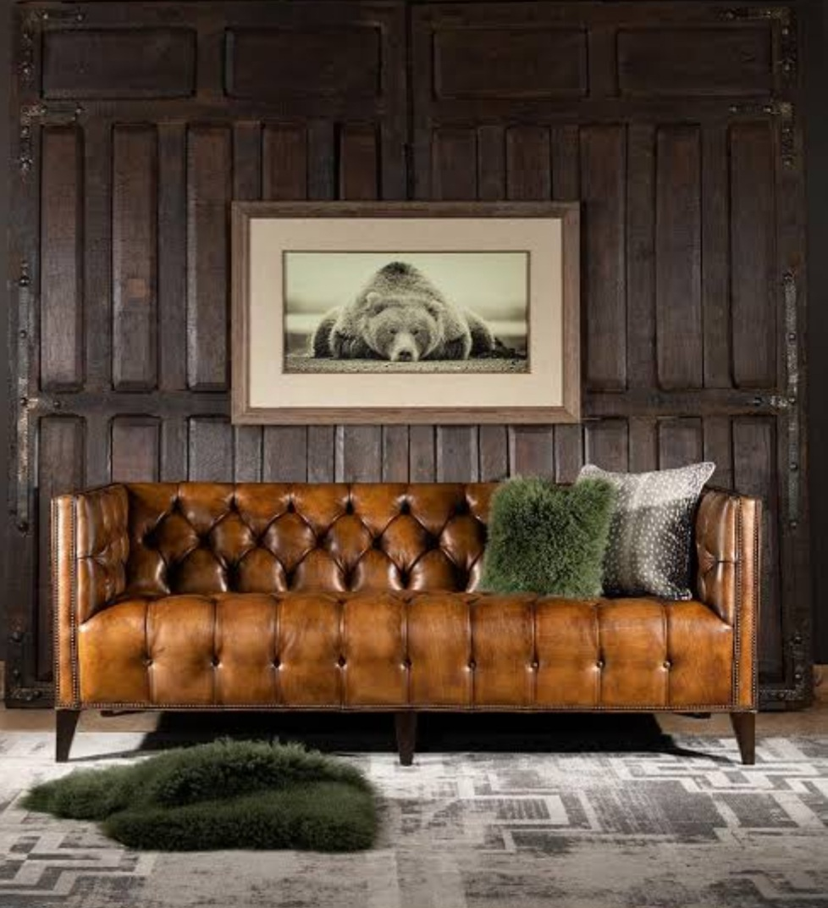

Recliner Repairs
Mechanism resets, new foam, replacement fabric or leather on manual and electric recliners.
Learn more →
Every piece gets assessed on-site or in-workshop before we quote — so the fabric, foam density and stitching match what the frame actually needs.
Mechanism resets, new foam, replacement fabric or leather on manual and electric recliners.
Learn more →Full and partial reupholstery for two, three and L-shaped couches, including corner frame repairs.
Learn more →Seat pads, backrests and piping re-covered to match or refresh your dining set.
Learn more →Hand-woven cane, rattan and wicker restoration for period and outdoor furniture.
Learn more →Weather-resistant fabric and foam for outdoor lounge sets, benches and cushions.
Learn more →Custom cushions, headboards and made-to-measure slipcovers when a full rebuild isn't needed.
Learn more →WhatsApp us a few photos or arrange an on-site assessment for large or delicate pieces.
We confirm fabric, foam and timeline in writing before any work or deposit is taken.
Frames are reinforced, foam replaced where needed, then hand-upholstered in the workshop.
Every piece is inspected before collection or delivery, with workmanship covered by warranty.
We collect and deliver within roughly 50km of Randburg, including these areas:
4.8 out of 5 from 46+ verified Google reviews
It depends on the piece, fabric choice and how much frame or foam work is needed — which is why we quote in writing after seeing photos or the item itself, rather than giving flat prices upfront. Most quotes are ready within a day.
Simple recovers can take under a week; full strip-downs, frame repairs or made-to-order fabric usually take longer. We give a realistic timeline with every quote and update you if anything changes.
Yes — a deposit (commonly 50%) is required before we order fabric or foam, with the balance due when your piece is ready for collection or delivery. Full terms are on our Terms & Conditions page.
We're based in Strydompark, Randburg, and service roughly a 50km radius across greater Johannesburg, including Bryanston, Sandton, Rosebank, Melville, Roodepoort, Krugersdorp and Centurion.
Yes. Send us the fabric details or bring it to the workshop and we'll confirm it's suitable in weight and quantity before we start cutting.
Our workmanship — stitching, frame repairs and foam we fit — is covered for 12 months from collection against faults in the work itself.
Send a photo on WhatsApp for a fast, no-obligation estimate.